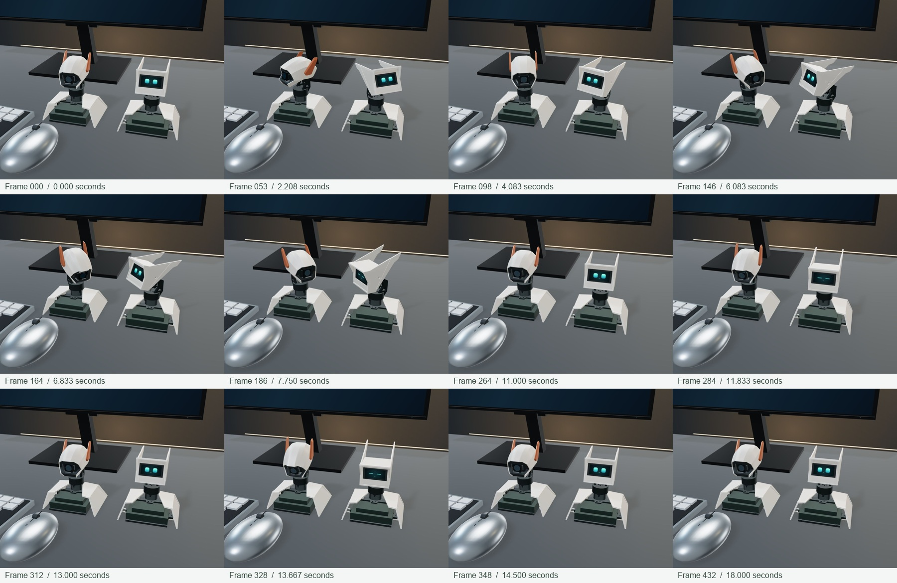
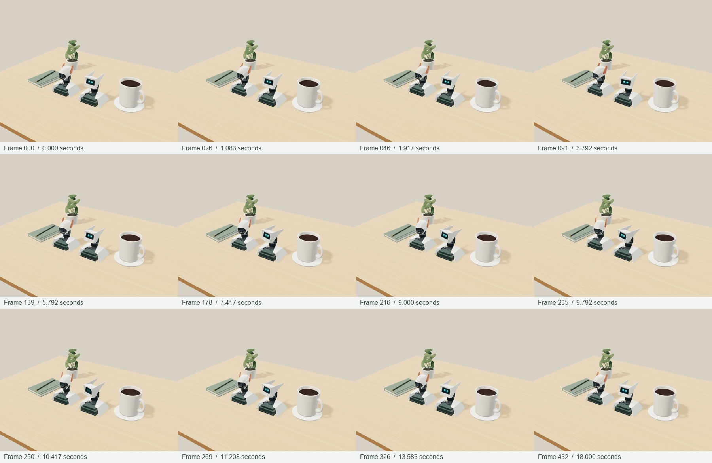

上一版只验证了曲线与装配层级，就给动作表现打了分，这个标准不成立。第二版围绕明确的转向目标、停顿和先后回应重做；不以单测通过宣称动作达到100分。
这是433帧渲染序列按24fps编码的预览。浏览器检查出现了刷新节流，因此视频帧率不代表现场浏览器性能。
幅度仅用于网页动作预览，实际机械限位仍待确认。几何检查保证有限坐标、固定底座和表情附着，不等同于机械碰撞或实体运动验证。


数值验证记录 · 打开Three.js场景